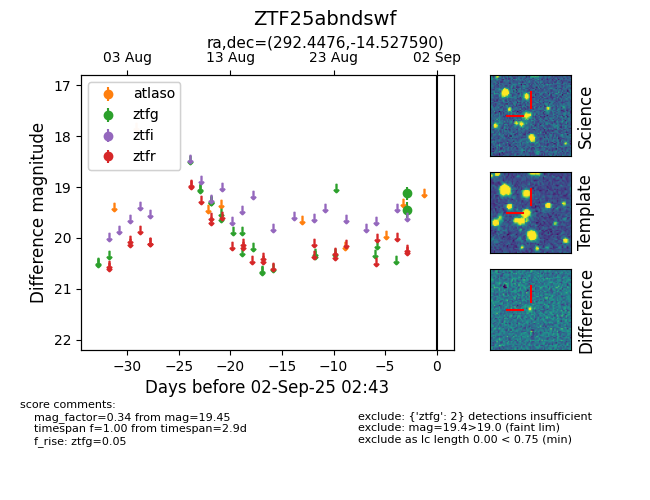

FINK: ZTF25abndswf
Lasair: ZTF25abndswf
ALeRCE: ZTF25abndswf
ZTF25abndswf (ztf,fink)
equatorial (ra, dec) = (292.4476,-14.52759)
galactic (l, b) = (24.0169,-14.94447)

last ztfg=19.45
2 ztfg detections